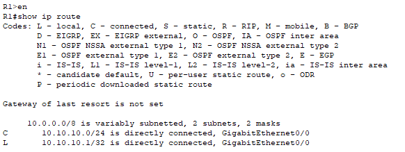
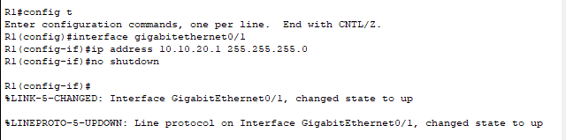
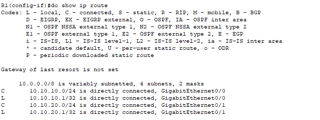
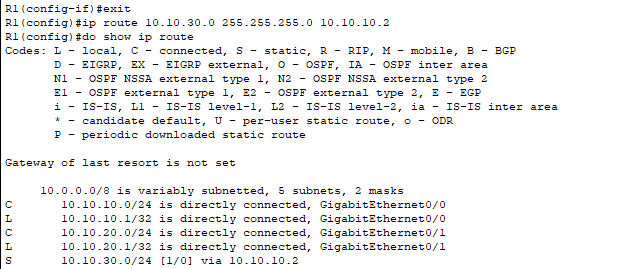

ROUTING TABLE
Objective: We will be viewing the routing table on routers(R1). What routes are present and why.
In order to view the routing table we use the command "show ip route"

The router has a connected route for the 10.10.10.0/24 network and a local route for 10.10.10.1/32. They were automatically created when the IP address 10.10.10.1/24 was configured on interface gigabitethernet0/0
We will be configuring ip address 10.10.20.1/24 on interface gigaethernet0/1.
The screenshot below demonstrates the commands and procedures required to do this configuration.

We used the command " config t" to access the configuration terminal to enter configurations commands.
I went ahead to enter "interface gigabitethernet0/1" to specify the NIC i am configuring. Then I entered "ip address 10.10.20.1 255.255.255.0" to specify the configured ip address and respective subnet for this configuration.
I checked the results of this configuration using "show ip route" command as shown below.

And as we can see in the screenshot gigabitethernet0/1 has been configured the ip address 10.10.20.0/24. This means the router has routes for both interfaces and can route traffic between hosts on the 10.10.10.0/24 and 10.10.20.0/24 networks. This means hosts on these two seperate networks can communicate through this router since they are both configured on the same router and on the same subnet.
Now I will be configuring a static route to the ip address 10.10.30.0/24 with a next hop address of 10.10.10.2

So the router has routes to its locally connected networks, and also to 10.10.30.0/24 which is available through 10.10.10.2